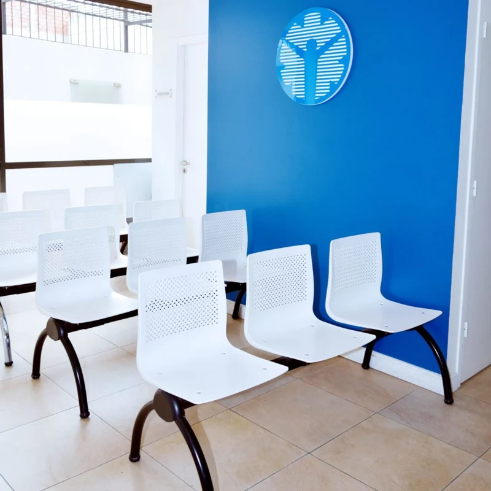

NUESTROS SERVICIOS
Nuestras especialidades
Nuestras especialidades
diagnósticas.
Más de 20 años de experiencia en diagnóstico por imágenes en Mendoza, con tecnología de avanzada y atención médica cercana.
Resonancia Magnética
Tecnología de avanzada al servicio del diagnóstico médico.
Resonancia Magnética
Servicio de resonancia magnética en nuestra sede de Mitre 775, Ciudad de Mendoza. Consultá por tu estudio y su preparación al solicitar el turno.
Mitre 775
Consultar por este estudio
↗
Hemodinamia
Experiencia médica y tecnología para la atención cardiovascular.
Hemodinamia
Cardiología intervencionista, electrofisiología y neurointervencionismo, con tecnología angiográfica y criterio médico. Guardia pasiva.
Hospital Privado de Mendoza · Hospital Santa Isabel de Hungría
Consultar por este estudio
↗
Tomografía
Estudios por imágenes con acompañamiento profesional.
Tomografía
Estudios tomográficos de alta resolución con supervisión y criterio médico. Guardia activa 24 hs. Consultá la preparación y cobertura correspondiente.
Clínica Santa María · Av. Colón 350
Consultar por este estudio
↗
Ecografía y Eco Doppler
Evaluación por imágenes y atención médica cercana.
Ecografía y Eco Doppler
Estudios ecográficos y mapeo vascular Doppler. Consultá por disponibilidad, requisitos y preparación antes de tu turno.
9 de Julio 716 · Av. Colón 350
Consultar por este estudio
↗
Radiología Digital
Servicio de diagnóstico radiológico con tecnología digital.
Radiología Digital
Radiología digital de alta resolución, directa y contrastada. Consultá requisitos y orden médica al solicitar el turno.
9 de Julio 716 · Av. Colón 350
Consultar por este estudio
↗
Ecografía
Estudios ecográficos integrales con criterio médico.
Ecografía
Diagnóstico ecográfico general y especializado con atención médica cercana y equipamiento moderno.
9 de Julio 716
Consultar por este estudio
↗
Punciones Guiadas por Ecografía
Procedimientos guiados por ecografía según indicación médica.
Punciones Guiadas por Ecografía
Punciones tiroideas, prostáticas y mamarias guiadas con precisión ecográfica. Coordiná los requisitos previos con nuestro equipo.
9 de Julio 716
Consultar por este estudio
↗
Ecocardiografía
Estudios ecocardiográficos. Consultá turnos y requisitos.
Ecocardiografía
Evaluación ecocardiográfica de la estructura y dinámica cardiovascular con tecnología de alta precisión.
9 de Julio 716
Consultar por este estudio
↗
Punciones Biopsia Guiada por Tomografía
Procedimientos guiados por tomografía según la orden médica.
Punciones Biopsia Guiada por Tomografía
Procedimientos intervencionistas de alta precisión anatómica guiados por tomografía según la derivación de tu médico tratante.
Av. Colón 350
Consultar por este estudio
↗
Mamografía Digital
Estudios de diagnóstico mamario. Consultá cobertura y disponibilidad.
Mamografía Digital
Estudios de diagnóstico y control mamario con tecnología digital directa. Consultá cobertura y requisitos al solicitar tu turno.
Mitre 775 · 9 de Julio 716
Consultar por este estudio
↗

20+
años de experiencia en salud en Mendoza
ACERCA DE NOSOTROS
Trayectoria médica
Trayectoria médica
y compromiso humano.
Hace más de dos décadas comenzamos con una idea clara: utilizar la tecnología para lograr diagnósticos más precisos y mejorar la vida de las personas.
Hoy seguimos evolucionando con innovación, experiencia médica y atención humana como pilares. La capacitación y modernización constante nos permiten acompañarte en cada estudio.
Conocé a nuestros profesionales
NUESTRAS SEDES
Estamos cerca
Estamos cerca
para acompañarte mejor.
Elegí una sede para conocer su ubicación y los servicios que brinda.
Sede Mitre
Mitre 775 · Ciudad de Mendoza
Servicios en esta sede:
Resonancia Magnética
Tomografía
Ecografía
Eco Doppler Color
Mamografía Digital
Punciones guiadas
Bloqueos por dolor
Consultá la disponibilidad de tu estudio y los horarios de la sede al solicitar el turno.
OBRAS SOCIALES Y PREPAGAS
Tu cobertura,
Tu cobertura,
más cerca.
Trabajamos con obras sociales y prepagas. Consultá la cobertura y autorización correspondiente a tu estudio.
Ver todas las coberturas
NUESTROS PROFESIONALES
Experiencia médica.
Experiencia médica.
Atención cercana.
Profesionales destacados de nuestro equipo en el área de diagnóstico vascular y por imágenes.
Conocer a todo el equipo
ANTES DE TU VISITA
Todo más claro.
Todo más claro.
Desde el primer paso.
Te orientamos para que puedas organizar tu estudio con tranquilidad.
¿Cómo solicito un turno?
Escribinos por WhatsApp al 261 511 7290. Indicá qué estudio necesitás para que nuestro equipo te informe sobre turnos, sede y requisitos.
¿Dónde puedo ver mis resultados?
Ingresá al portal “Mis estudios” con los datos de acceso que te haya brindado la institución. Si necesitás asistencia, contactanos.
¿Qué documentación y preparación necesito?
Los requisitos pueden variar según el estudio y tu cobertura. Al pedir tu turno, consultá por la orden médica, autorizaciones y preparación específica.
¿Puedo consultar por teléfono?
Para consultas y turnos de resonancia magnética podés llamar al 0261 423 7271. Para el resto de los turnos, usamos WhatsApp al 261 511 7290; ese número no recibe llamadas.
TU SALUD, NUESTRA MISIÓN
El primer paso es simple. Estamos para acompañarte.
Consultá por tu estudio, cobertura o sede. Nuestro equipo te orientará para solicitar tu turno.
Escribinos por WhatsApp